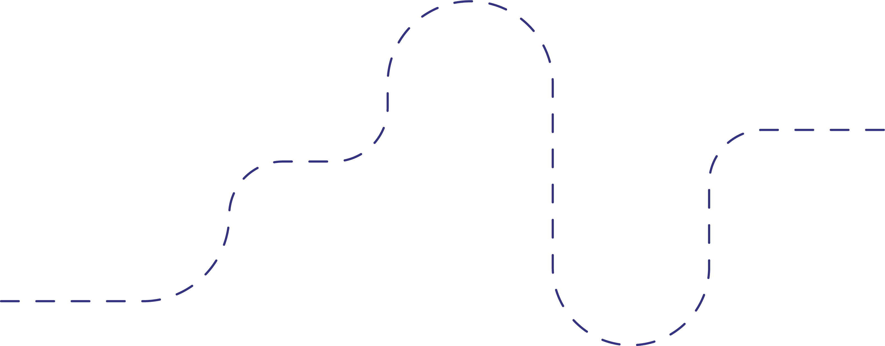

<meta name="viewport" content="width=device-width, initial-scale=1.0">
<main id="main">

  

  <section class="journey">

    <h1>THE JOURNEY OF YOUR GARMENT</h1>

    <p>Curious about where your garment has been? Join us on a journey, from material to wardrobe. We follow the entire production chain and we are happy to take you here. By entering the code of the garment below, you will discover the journey that your piece of clothing has taken.</p>

    <div class="journey-input">


      <div class="tooltip">
        <span class="tooltiptext"> On the tag of your garment you can find a black and white barcode. This code contains 8 to 13 numbers. Type these numbers into the text bar. </span>
      </div>

        <input type="text" [(ngModel)]="tokenId" id="input" placeholder="5016599008681">

    </div>

    <p class="style">Click down the button below and find out about the journey of your garment!</p>

    <a [routerLink]= "['/app/clothing/'+ tokenId]" class="journey-bttn">CHECK YOUR GARMENT</a>

  </section>
</main>
<button (click)="initTestNFt()" type="button">Click Me!</button>
